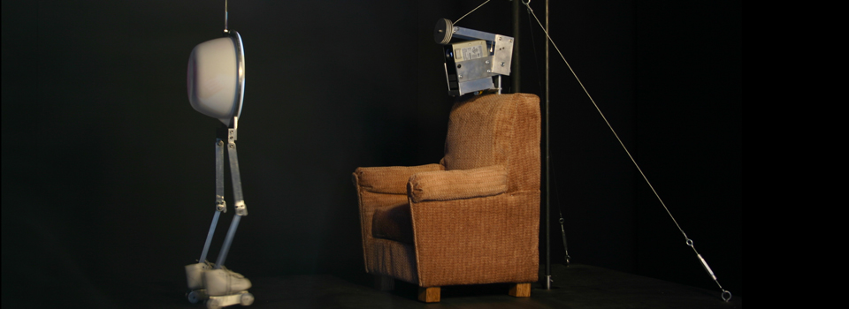
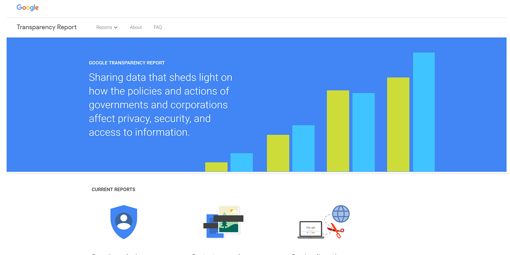

Are Anti-racist LLMs The New Frontier of The Culture War?
- Earlier this week Google temporarily suspended Gemini’s image generation capabilities due to the multi-modal model producing historically and racially inaccurate content. This stirred up a public conversation about the “morality” being imposed on these LLMs and whether or not they have political/cultural biases.
“Google originally did this because they didn’t want pictures of people doing universal activities (e.g. walking a dog) to always be white, reflecting whatever bias existed in their training set. This is not an unreasonable thing to do, given that they have a global audience. Maybe you don’t agree with it, but it’s not unreasonable. Google most likely did not anticipate or intend the historical-figures-who-should-reasonably-be-white result.” @Yishan on X

It’s Hard to Predict How LLMs will behave
Was this move by Google intended to be some woke-ist control tactic to promote a DEI utopia inside Gemini’s framework? Probably not. The explanation that Google gave is perhaps a little more frightening:
“So what went wrong? In short, two things. First, our tuning to ensure that Gemini showed a range of people failed to account for cases that should clearly not show a range, And second, over time, the model became way more cautious than intended and refused to answer certain prompts entirely – wrongly interpreting some very anodyne prompts as sensitive.” - Google

To sum it up, despite thousands of hours and billions of dollars in resources put into testing one of the most powerful AI models to date, we had no clue it didn’t know what race was. This is the most worrying part for me. That such a powerful model can behave in such an unexpected and biased way is a categorical failure from Google’s red-teamers and moderators. As easy it is to think that big tech companies exhibit a huge amount of control on how these models behave and which biases they do or do not have, the reality is that moral guardrails are incredibly subtle and difficult to enforce successfully. Even when Google tells us what went wrong… they don’t really know. They can’t read the LLMs mind since it’s composed of billions of parameters trained on a massive corpus of unstructured data. They can theorize based on context, but their guess is ultimately as good as ours. This mistake underscores the overall necessity of stronger (internally and externally enforced) testing requirements for LLMs of this size.
The Problem of Transparency
This recent development has sparked widespread debate about the morality big tech companies might be trying to impose on us through AI. Just about everyone however–including Google–seems to agree that what Gemini was doing is not the sort of behavior we want from AI systems. I could go deeper into my thoughts on AI systems should handle sensitive subject matter, but I think it’s more useful to re-frame the debate. Ultimately, Google is a privately held company which is at the behest of a network of forces including advertisers, regulators, users, and employees. Similar to percieved bias on social media platforms it’s unlikely that anything will come of shouting into whichever echo chamber you choose about the company’s biases and ways you think they’ll destroy the world. I think instead we should be pushing for a simpler request: transparency. I agree with YouTuber/Blogger David Shapiro who wrote:
“User consent matters. Hijacking your intentions as a user of any technology is wrong. Enforcing a particular worldview on users is flatly unethical. Yes, racism is bad, but cramming one for-profit company’s view of morality down user’s throats is dystopian AF.” - David Shapiro (YouTuber/Blogger)

Google cannot please everyone. They will have their political, cultural, gender-based biases, and not only is that not the issues, that’s unavoidable. Why people were so upset about this really was the fact that Google didn’t tell anyone that Gemini was programmed in this way. In a world where we get LLMs to write for us, come up with ideas, and bolster our creativity the subtle biases of the algorithms can have out-sized impacts on how we think, connect, and communicate as a society. The onus should be on these big tech companies to at least tell us what biases these things have even if they might fully know themselves.